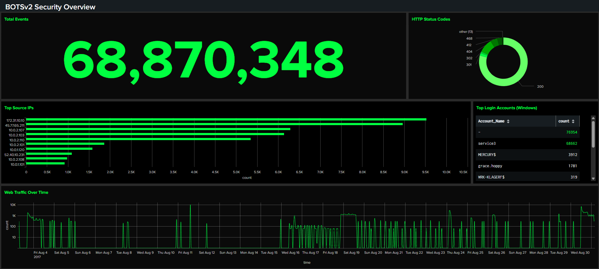

Overview
This case covers standing up a working SIEM environment and learning to turn raw security logs into actionable monitoring. The lab uses BOTSv2 (Boss of the SOC v2) — a publicly available dataset that simulates real-world security incidents across multiple data sources.
The goal was to ingest heterogeneous logs, identify patterns of compromise, and build an intuitive dashboard that communicates findings to both technical and non-technical stakeholders.
Lab Environment
| Component | Detail |
|---|---|
| SIEM Platform | Splunk Enterprise 4.78.0 |
| Dataset | BOTSv2 |
| Indexes Used | botsv2 |
| Key Sourcetypes | mysql:server:stats, mysql:transaction:details, stream:http |
| Deployment | Docker |
Methodology
Ingest & Orient
Loaded the BOTSv2 dataset into Splunk and ran broad searches to understand what sourcetypes and fields were available.
Hunt with SPL
Wrote targeted searches to surface indicators of compromise across the simulated environment.
Build Dashboards
Translated the most useful searches into permanent dashboard panels with time charts, tables, and single-value indicators.
Rehearse & Present
Practiced presenting the dashboard live, narrating each panel's purpose and relevance to non-security audiences.
Key SPL Queries
Event Volume by Sourcetype
This query counts events by sourcetype to see overall log volume across the dataset, helping identify which data sources are most prolific.
Event Volume Trends Over Time
This query visualizes how event volume changes over time across the dataset, broken down by sourcetype, revealing patterns and spikes in activity.
Key Findings
- High-volume database activity:
mysql:server:statsandmysql:transaction:detailswere the highest-volume sourcetypes in the dataset (~13.5M+ events each), indicating heavy database activity logging in the environment. - Bursty event distribution: The hourly timechart revealed that log volume was extremely concentrated rather than continuous. The vast majority of hourly windows showed zero events across most sourcetypes, with two sharp spikes indicating periods of intense activity—likely corresponding to simulated attack phases.
- Multi-source correlation potential: The presence of HTTP, database, and system logs created opportunities for multi-source correlation to detect lateral movement and data exfiltration attempts.
Dashboard

Dashboard summarizing overall event volume, HTTP status codes, top talking IPs, top login accounts, and web traffic trends across the BOTSv2 environment.
Skills Demonstrated
Reflection
The hardest part of this case was getting comfortable with SPL syntax itself — understanding how commands like stats, timechart, and sort pipe into each other to transform raw events into meaningful insights. Once that mental model clicked, the rest flowed naturally.
Building the dashboard taught me that technical prowess alone doesn't matter if you can't communicate findings clearly. Choosing the right visualization for each metric (sparklines for trends, single values for alerts, tables for detail) was as important as the underlying queries. Practicing the presentation made all the difference — I learned to tell the story of the data, not just show it.